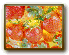
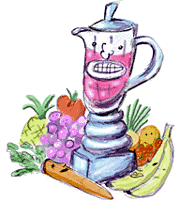

About Jus!
Emloyment Opportunities
Nutritional Value

Ingredients
| Movers and Shakers We here at Jus understand just how hard it can be to juggle a job, a life, and a daily balance of vitamins and nutrients. That's why we we're on the go - churning, blending, and mixing fruit goodness for healthy lifestyles you can raise your CFC-free, recyclable cup to. We just can't sit still! Why spend a fortune on space-age pellets and dietary supplements when you can refuel with a mango-boysenberry shake? Or soothe away your worries with a honey-strawberry smoothie? Wash down those high-tech carbohydrates with a drink picked fresh from our juice tree.
|
 We use only the tastiest organic fruits, trucked in daily from our small-farm suppliers in Northern California, and the purest honey yogurt made from cows we know personally. Jus is all-natural energy, direct from Mother Earth. So stop by your nearest Jus station today and drink to your health. Our fruit is juice waiting to happen! |

CONTACT JUS AT
WWW.JUSMAIL.COM